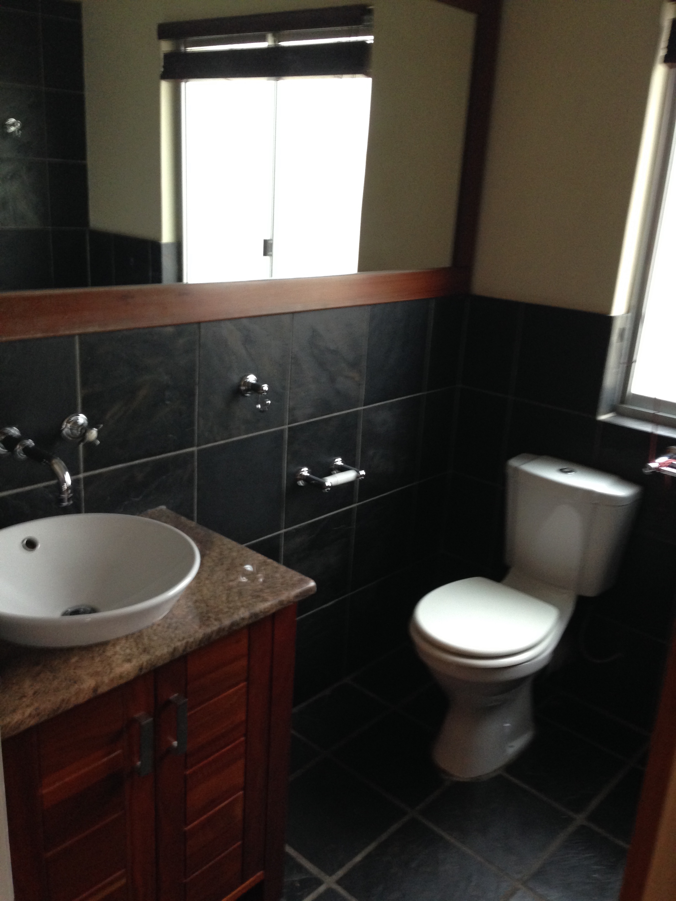
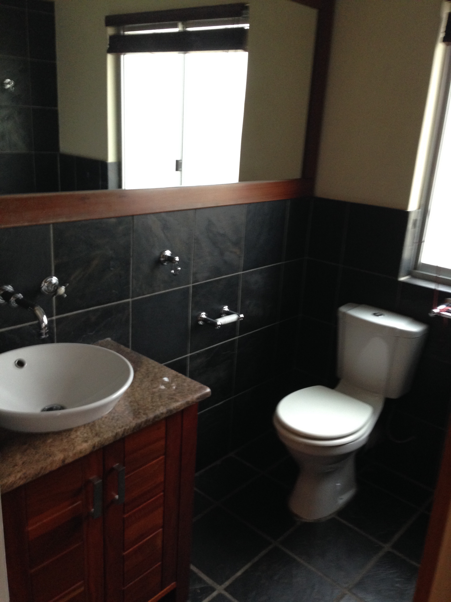
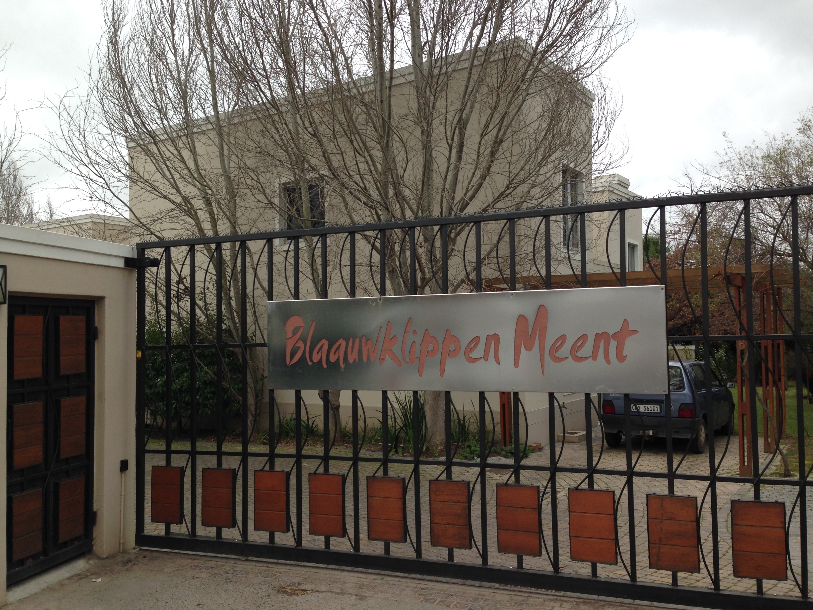
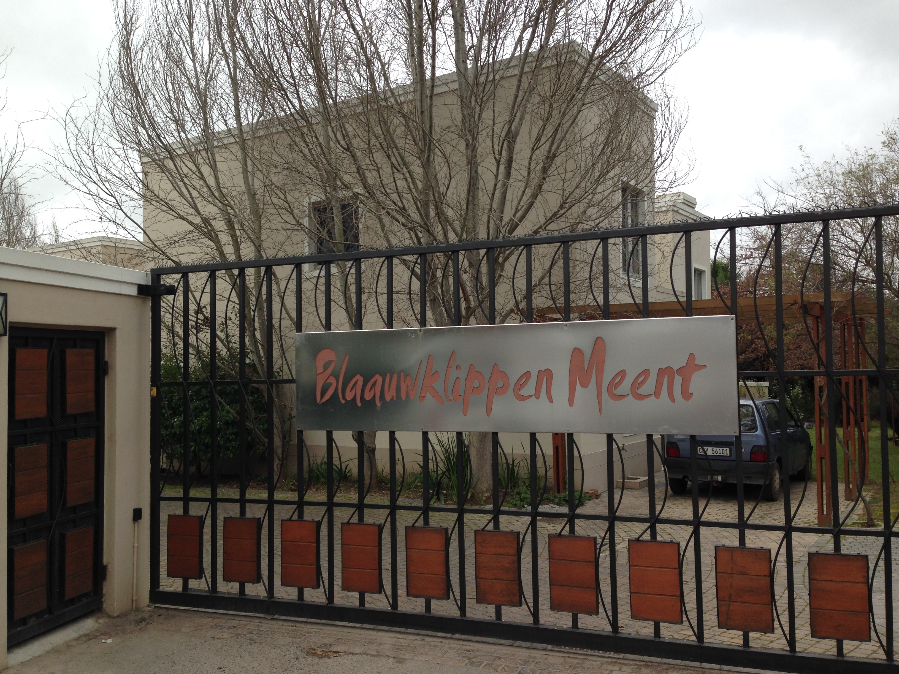
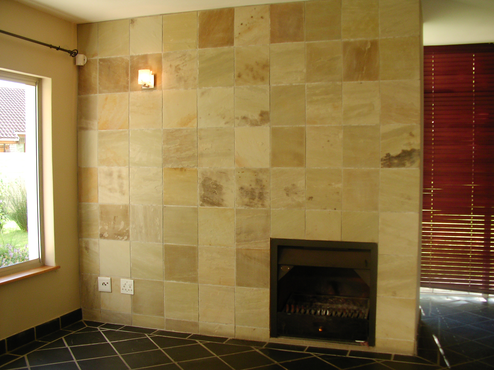
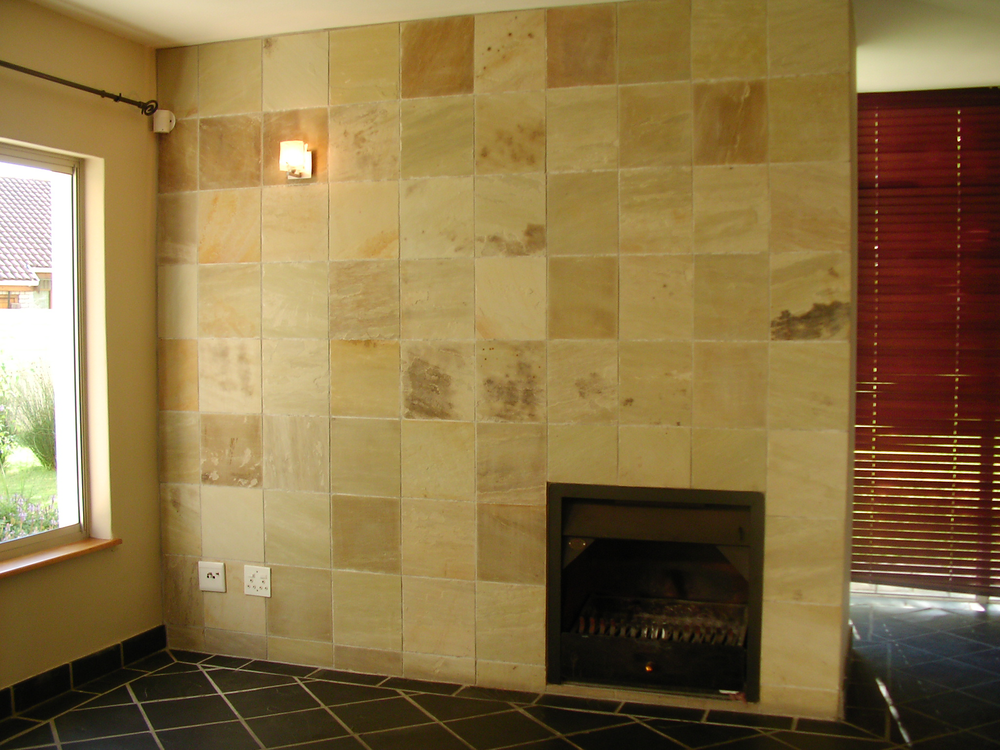

Upmarket Modern Luxury Style well-lit 3-Bedroom 1.5-Bathroom Townhouse in the Blaauwklippen Meent complex.
Skip traffic and live the Stellenbosch dream!
With Technopark, Stellenbosch Square shops, wine estates and restaurants just around the corner. Experience the spectacular views of the beautiful mountains whilst enjoying quick and easy access to Eden hiking, running and cycling trails. The open-plan kitchen leads into the living area and garden - perfect for entertaining.
- Open plan kitchen and lounge area
- Fireplace
- TV-dish
- Granite countertops and stainless steel oven
- Wooden floors, cupboards and blinds
- Laundry area in garage
- Fences, security gates and alarm system
- One garage and one parking place
- Garden for entertaining
- Gardens maintained by owner
Located at Blaauwklippen Road, Paradyskloof, Stellenbosch - Google Maps: Blaauwklippen Meent
Your perfect townhouse - Garden service included free of charge
Available from 1 December 2017 - annual lease contracts
Contact number for viewing of premises 0027 83 461 8915
 

 

 
